Xmonad ja dynaamiset työpöydät
Xmonadin oletuksena tarjoamat 9-10 työpöytää tulevat nopeasti ahtaaksi, kun oikein haluaa railatella. Lisäksi ennalta valitut, kiinnitetyt työpöytänimet eivät aina kuvaa koko totuutta. Saataisiinko Emacsin IDO-moodia vastaavaa huippukäytettävää toiminnallisuutta Xmonadin työpöytiinkin? Voi, kyllä saadaan, kiitos tuoreen löydön, Xmonad.Actions.Commands-kirjaston.
Tuli tässä virikettä säätää Xmonadia eteenpäin, kun kuulin tyylikkäästä X.A.Commands-kirjastosta. Kyseinen kirjasto tarjoaa dmenu-rajapinnan erilaisten Xmonad-komentojen (eli tietyntyyppisten Haskell-funktioiden) suorittamiseen. Dmenulle tarjoillaan lista erilaisia merkkijonoja ja käyttäjä valkkaa sopivan listalta. Xmonad suorittaa sitten. Suurin ilo irtoaa sitten, kun muistaa erään sumean haun toiminnallisuuden tuovan pätsin olemassaolon dmenun versiolle 4.5.
Dmenu 4.5 ja dmenu-4.5-fuzzy.diff
Tavallinen dmenu ottaa listan merkkijonoja vastaan, esittää ne graafisena listalla näytön ylä- tai alareunassa, ja antaa käyttäjän näppäillä listaa lyhyemmäksi, kunnes voi valita mieleisensä näppäimistöltä käsin. Dmenu palauttaa valinnan stdouttiin.
Tämä on kiva ja muutama käyttöympäristö käyttää dmenua ohjelmakäynnistimenä. Tämä on kiva ilman sumeatakin hakua. Mutta jos oikein halutaan kaikki irti tuosta Xmonadin X.A.Commands-kirjastosta, on sumeus aikalailla must.
Gentoon portagessa ei dmenulle moista pätsiä tarjoilla, enkä viitsinyt taiteilla portagen ebuild-patch-overlayn kanssa, joten latasin, pätsäsin ja käänsin kotihakemistoni onkaloihin. Kirjoitin pienen launcherin sumean haun aktivoimiseksi ja kaikki on reilassa.
exec /home/progo/.dmenu/bin/dmenu -i -z "$@"
Erillinen dmenu_launch on erikseen, ja siinä tuo sumeuden
aktivoiva flagi -z on poissa. Näin on hyvä.
Työpöytävalinta uuden Dmenun avulla
Ensin tietysti kokeiltiin tätä vanhan konffin kanssa. Vielä eilen
kovassa käytössä oli 10-ympäristöinen systeemini, jossa työpöytiä
vaihtavat vain näppäinyhdistelmät Win-d, . Tähän
skeemaan olisikin ollut hankala lisätä uusia työpöytiä, ja
muutenkin ideana olisi saada kestävämpi ratkaisu.
X.A.Commands sisältää muutamia valmiiksimääriteltyjä
"komentolistoja", joista yksi on defaultCommands ja toinen on
workspaceCommands. Triviaali pikakokeilu osoittaa kaikki ideat
toimiviksi; mapataan kokeeksi näppäin Win-x.
((modm, xK_x), defaultCommands >>= runCommand)
(Tämä pitää ujuttaa sinne Xmonad-konffin keys-listan jatkeeksi.
Tavalla tai toisella, niitä on niin monia…)
Tämä toimii upeasti. Entä pelkästään työpöytien vaihtamiseen liittyviä komentoja? Tämä on nyysitty/mukailtu X.A.Commandsien lähdekoodista. Tai saattoi olla oletuskonffin näppäinyhdisteistä. Joka tapauksessa tämä tuottaa listan pelkästään työpöytiin vaihtavia komentoja ja niille merkkijonoja.
viewWorkspaceCommands :: X [(String, X ())] viewWorkspaceCommands = asks (workspaces . config) >>= \spaces -> return [((m ++ " " ++ show i), windows $ f i) | i <- spaces , (f, m) <- [(W.greedyView, "view")] ]
Vastaavasti purkkasin ikkunoita siirtävän version. Vaihdetaan vain
funktio W.greedyView funktioksi W.shift. Ja nämä mappasin näppäimelle
Win-f ja Win-S-f nyt toistaiseksi:
((modm, xK_f), viewWorkspaceCommands >>= runCommand) ((modm .|. shiftMask, xK_f), moveWorkspaceCommands >>= runCommand)
Ja yllätyksekseni toimii moitteetta! Nyt homma toimii siis kiinteän työpöytälistauksen kanssa, eli kamalasti etua ei vielä tässä ole. Mutta odotapas kun työpöytiä on kymmenen sijasta 100…
Dynaamiset työpöydät Xmonadissa
Xmonadin dynaamiset työpöydät on tehtävissä monella, monella tavalla. Minä tein nyt sillä tavalla, että hyödynnän työpöytiä uudelleennimeävää kirjastoa, X.A.WorkspaceNames:ia.
Luon nyt oletuksena 99 työpöytää triviaalilla nimeämisellä. Luulisipa riittävän!
myWorkspaces = map show [1 .. 99 :: Int]
Tietysti tämä ei ole teknisesti ottaen dynaamista nähnytkään, koska kaikki työpöydät on luotu Xmonadin käynnistyessä. Idea on kuitenkin ihan kelpo.
Sitten meidän pitää saada nimetä työpöytiä haluamaksemme. Se
WorkspaceNames-kirjasto tulee tässä apuun. Siihen ei tarvitse
muuta kuin seurata kirjaston dokumentaation ohjeita ja tehdä
sopiva näppäimistömappaus renameWorkspace-funktiolle. Laitoin
omassa konffissani sen nyt Win-s:n taakse.
Nyt uudet työpöydät näkyvät oikein statuspalkissa (Xmobar
minulla), mutta eivät pirskattilainen näy tuoreelti
konffaamassamme dmenussa. Tarvitaan hieman voitelua ja
WorkspaceNamesiin kuuluvaa funktiota getWorkspaceNames.
Kirjoitetaan aiemmin määritelty viewWorkspaceCommands uudestaan:
type NamedAction = String -> WindowSet -> WindowSet doWSCommands :: NamedAction -> String -> X [(String, X ())] doWSCommands action string = do spaces <- asks (workspaces . config) wsNames <- getWorkspaceNames -- (1) return [((m ++ " " ++ show (wsNames i)), windows $ f i) | i <- spaces , (f, m) <- [(action, string)] ] viewWorkspaceCommands = doWSCommands W.greedyView "view" moveWorkspaceCommands = doWSCommands W.shift "move"
Taikasana on (1):llä merkitty monadisovellus, joka tuottaa
meille sopivan funktion työpöytäolioista niiden "dynaamisiin"
nimiin.
Ja kaikki tuntuu upeasti toimivan. Nyt minulla on kymmenen ensimmäistä työpöytää edelleen nopeiden pikanäppien takana ja loputkin ovat saatavilla dmenun kautta. Ilmeisesti nimet säilyvät myös Xmonadin uudelleenkäynnistysten yli, vaikka se ei ollut prioriteetti. Olen yllättynyt erityisesti omista hakkailutaidoistani. Ilmeisesti Clojuren kautta alkaa viimein tarttua jotain oikeata funktionaalista osaamista.
Jatkokehittelyä
Tämä on siis nykytilanne. Mitä parannuksia systeemi saattaisi vaatia?
- Työpöytien swappaus, eli kaikkien ikkunoiden siirtäminen
kerralla työtilasta toiseen voisi olla paikallaan, jos haluan
varata jonkun "nopean" pöydän (numero alle 10) jollekin
tuoreelle projektille.
WorkspaceNames saattoi tarjota jotain sellaista, mutta pitää nyt tutkia.
- Dmenun listauksessa on nyt aina 99 työpöytää, oli niillä nimi tai täytettä tai ei. Numero niillä on aina, mutta vähän rumalta voi näyttää. Voisikohan niitä piilottaa jollain ehdolla siten, että niihin pääsisi kyllä tarvittaessa käsiksi, mutta ei tarvitsisi pikavalinnassa näkyä.
Versiohallinta voittoon
Tämä on ollut lisäksi hyvä showcase gitille. Muutamia
kuukausia/vuosia sitten kun ensimmäistä kertaa tarkastelin
dynaamisia pöytiä, laitoin xmonad.hs:n git-repoksi ja kokeilin
toisessa haarassa noita juttuja. Eihän niistä tullut oikein
mitään. Onneksi toimiva peruskonffi oli vain haaranvaihdon takana.
Nyt sitten oli mukava palata vanhaan haaraan, yhdistää päähaarassa
tapahtuneet pikkumuutokset ja siistimiset ja konffata viimein koko
roska kuntoon. Ehkäpä haara dynamicws saa nyt siirtyä laitumille
ja mergaan koko toiminnallisuuden masteriin.